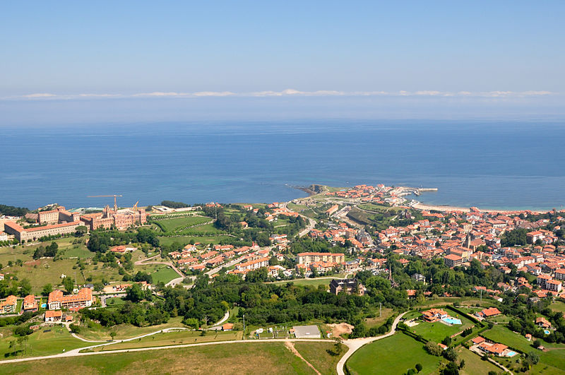
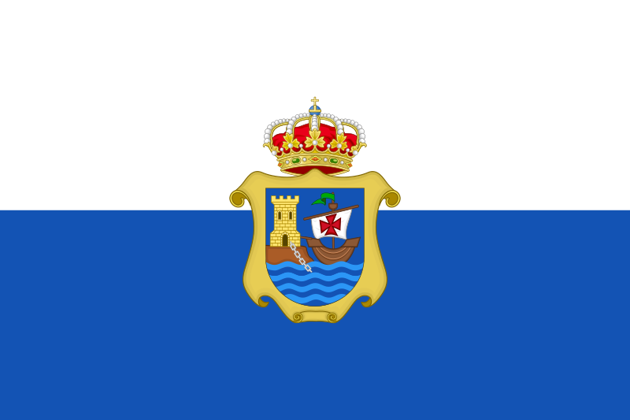

Comillas |
|
| Comillas es un municipio y una villa de la comunidad autónoma de Cantabria (España) situado en la Comarca de la Costa Occidental. Destaca por sus edificios medievales y barrocos y da nombre a la Universidad Pontificia Comillas ubicada originalmente en esta villa cántabra hasta su traslado a Madrid.
 |
Podeis visitar una pequeña reseña de algunas ciudades en los siguientes enlaces:  TorrelavegaComillasCorralesMenú principal |